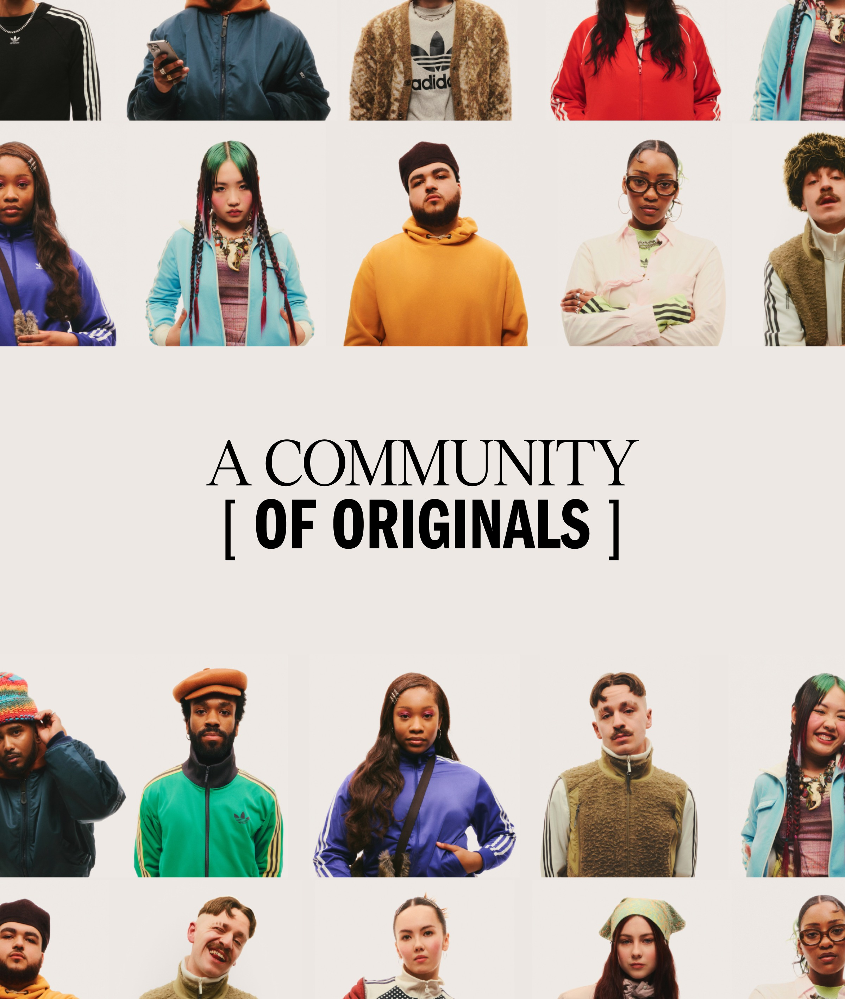

从排队拼手速到 Goldem Ticket——CONFIRMED 这几年的进化逻辑
回头看 CONFIRMED 的迭代，最有意思的不是新功能加了多少，而是 Adidas 一直在用发售机制本身解决公平性问题——从单纯排队到抽签、再到邀请和金卡，每一步都在重新定义什么叫"买到"。
现在这版 CONFIRMED 是什么样
从官方下载渠道装好它，打开现在的 CONFIRMED，你第一眼会看到首页上滚动的发售日历和精选商品——这已经是一个相当成熟的限量发售平台了。三种发售机制并行：抽签、排队、邀请，商品页会清清楚楚告诉你这场用哪种方式，报名截止时间、可选尺码、付款时限，全都摆在明面上——这套体系在CONFIRMED官网上也能看全。

但如果把时间拨回去几年，CONFIRMED 刚上线的时候完全不是这个样子。
它从哪起步——排队拼手速的年代
样本文档没提 CONFIRMED 的初代版本长什么样，但从现有功能的排列顺序能反推出来：排队一定是最早的发售方式。道理很简单——排队就是"先到先得、售完即止"，这是最原始的电商逻辑，不需要任何算法层面的公平性设计，有商品就上，开卖就抢。
排队模式的问题所有人都懂：拼网速、拼设备、拼提前量，甚至拼谁有脚本。普通用户在开售瞬间卡一下，页面刷出来的时候库存就没了。Adidas 显然很早就意识到了这个问题——因为抽签机制的出现，本质上就是对排队模式的一次系统性修正。
关键转折点：抽签机制带来的平等
抽签是 CONFIRMED 进化路上最重要的一个转折点。它的逻辑和排队完全不同：你只要在截止前提交报名就行，不需要盯着开售时间，不需要拼网络，截止后系统随机抽。时间窗口宽裕，中签概率对所有人平等——至少理论上是这样。
从排队到抽签，不是简单的"加了一个新选项"，而是 Adidas 对"什么是公平"这个问题的一次重新回答。排队的公平是"谁先到谁得"，抽签的公平是"随机概率"。这两种公平观背后的产品设计完全不一样：排队需要精确到秒的开售倒计时和实时库存更新，抽签需要的是报名截止后的批量处理和通知系统。
样本文档里提到 Adidas 在背后做了很多检测——验证支付信息、评估位置数据、检查异常行为——这些反作弊逻辑大概率也是抽签机制上线后逐步加强的。因为抽签一旦被机器人利用，对真实用户的伤害比排队更大——排队至少还有手速的门槛，机器人在抽签里就是纯概率碾压。
会员体系的深度整合——从 adiClub 到邀请和金卡
如果说抽签是 CONFIRMED 解决"用户与用户之间公平性"的方案，那邀请机制和 Golden Ticket 就是 Adidas 在"用户与品牌之间关系"上的延伸。
邀请机制很有意思——只有受邀的 adiClub 会员能参与，邀请通过应用内通知送达。保持账号活跃、提升会员等级能增加被邀请的概率。这实际上是在说：如果你是 Adidas 的忠实用户，品牌会给你一条专属通道，不用跟所有人一起挤抽签池。它不打破抽签的公平性，而是在公平之外额外开辟了一条"忠诚度兑换权益"的路径。
然后是 Golden Ticket——这个功能的联动程度更深。adiClub 积分加上金卡碎片可以兑换一张"限量发售必中特权"，直接获得购买资格，相当于跳过抽签和排队直接拿到入场券。这里 adiClub 的角色已经不是简单的账号体系了，而是变成了 CONFIRMED 核心玩法的一部分——积分可以抵现，可以换券，还能换"必中"这种最硬核的权益。这些权益的兑换路径和规则细节，CONFIRMED文档里写得很清楚。
团队一直在死磕什么，什么一直不管
从这几样功能的叠加方式来看，CONFIRMED 团队一直死磕的事情有两个：发售公平性和会员价值变现。
公平性这条线最清晰——排队（原始）→ 抽签（引入概率公平）→ 反作弊检测（防止概率被机器污染）→ 邀请（在公平之上叠加忠诚度通道）。每一步都是在回答"怎么让更多真实用户买到而不是被机器人和黄牛抢走"。
会员价值这条线相对隐含但同样明确——adiClub 账号是 CONFIRMED 的登录入口；收藏列表与 adiClub 绑定同步；积分能抵扣能换券能换金卡；邀请概率与会员等级挂钩。CONFIRMED 不是一个独立的抢鞋 App，它是 adiClub 会员体系里的一个消费场景。
那什么一直不管呢？样本文档里完全没提到的东西，恰恰说明哪些是 CONFIRMED 团队认为"不值得做"的：没有社区、没有用户生成内容、没有鞋子评测、没有二级市场交易功能——它从头到尾就是一个"发售工具"，把 Adidas 想卖的限量鞋款卖给想买的人，仅此而已。
下一步会怎么走
从这个迭代规律往下推，CONFIRMED 下一步大概率还是在两条主线上继续深化。
公平性这边，反作弊检测肯定会越来越严——Adidas 公开提到过会检查位置数据和异常行为，未来可能还会有更细的设备指纹和行为模式分析。抽签机制本身也可能有微调，比如针对某些特定商品（超限量、超热门）采用分层抽签或者额外的资格验证。
会员价值这边，adiClub 积分与 CONFIRMED 的联动空间还没铺满。现在积分能换抵扣券和金卡，但能不能换"优先参与某个特别活动"、能不能换"提前 24 小时看预告"——这类介于"权益"和"娱乐"之间的玩法，Adidas 大概率还在试水。
但有一件事几乎可以确定：CONFIRMED 不会变成一个球鞋社区或者交易平台。从它上线那天起，它的定位就很窄——就是 Adidas 自家限量发售的官方通道。窄定位让它在公平性这件事上可以做得很专注，也让它不会偏离主线去做那些看起来能增长但会稀释核心价值的功能。
写在后面
回头看这几年的变化，CONFIRMED 给人最大的感受不是"功能越来越多"，而是"同样一件事做得越来越细"——发售这件事，从排队到抽签到邀请到金卡，每一步都是在重新分配"谁能买到"这个最核心的问题。这比加十个花里胡哨的新功能都有价值。
这套资料在三个仓库都能拿到，GitHub 同步了完整文档，Gitee 上也有一份镜像，国内访问慢的时候可以走 GitCode 那个节点。